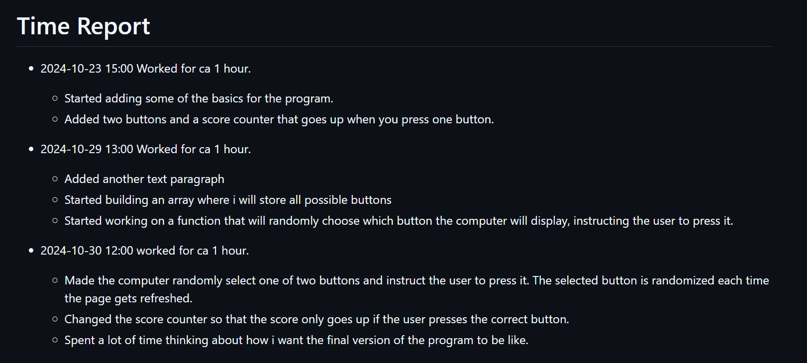

Copycat
Copycat is a project created by Arvid for his final major programming project in the programming course. On this page you can learn more about how the program was built and follow the process.
The process
The project started with an idea of making a "copycat" game where the user mimics the computer.
At first the program was built using only buttons on the screen that you would click on. This was later expanded on when I used the same concept but replaced the buttons on the screen with keys on the keyboard.
I have included some pictures to provide a more detailed view of the process.
This is a flowchart I made early in the planning stages of the project:

This is my time report, showing when I have worked and what I have done:
This is my bug list, where I have documented all major problems I have faced and how I have solved them.